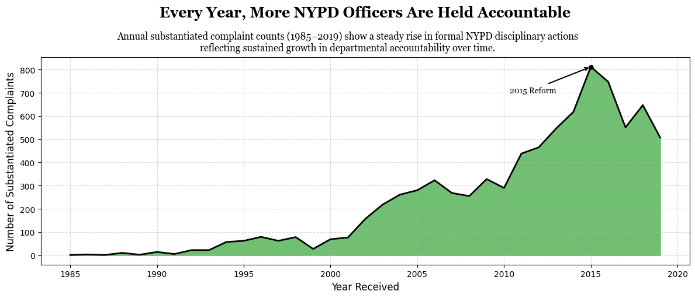
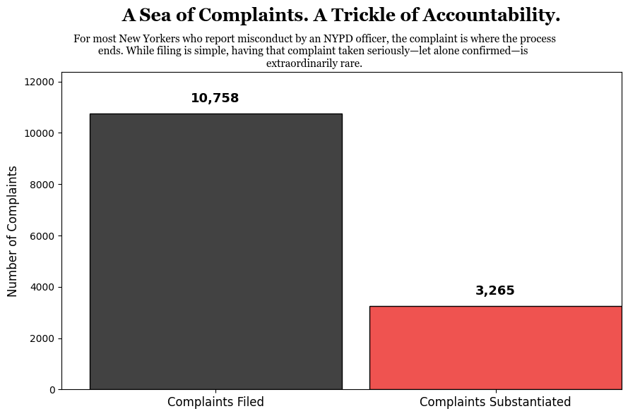

Project 2: Persuasive/Deceptive Visualizations
Proposition: The New York Police Department (NYPD) holds officers accountable when civilian complaints are filed.

- Fully deceptive
- Neutral
- Fully earnest

- Fully deceptive
- Neutral
- Fully earnest
Final Reflection